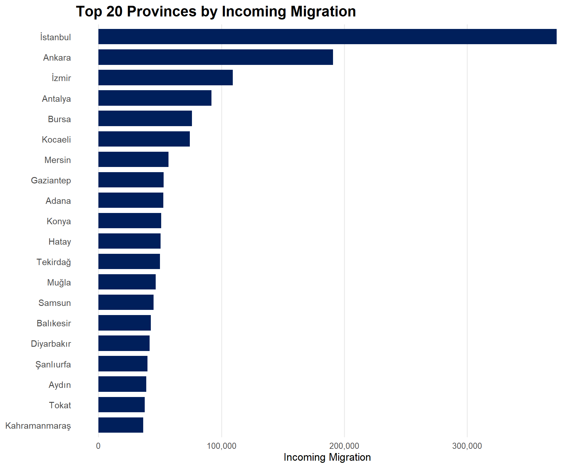
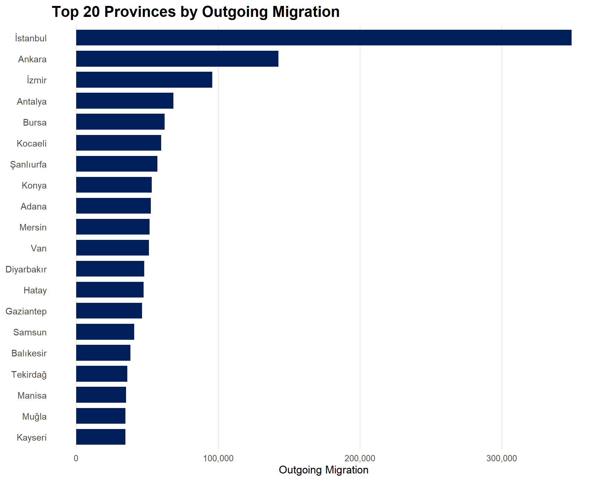
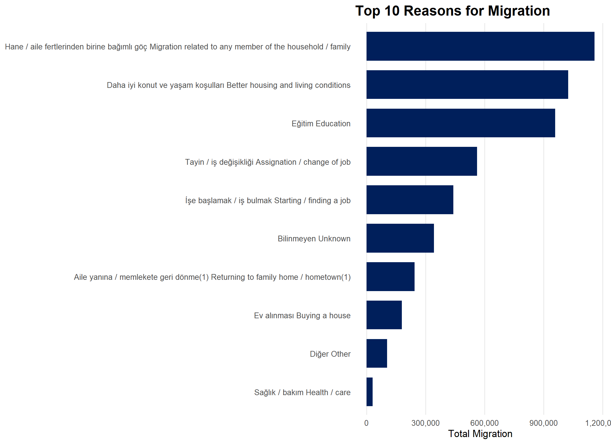

suppressPackageStartupMessages({
library(tidyverse)
library(readr)
library(knitr)
})
options(encoding = "UTF-8")
final_data_clean <- read_csv(
"final_data_clean.csv",
locale = locale(encoding = "UTF-8")
)Data Discovery and Retrieval Process
To meet the project requirement of using a “real-world dataset connected to Türkiye,” we selected official statistics from the Turkish Statistical Institute (TÜİK). We focused on the most recent “Internal Migration Statistics” (2024) and specifically utilized the “Inter-provincial migration by reason of migration” tables.
Data Source: TÜİK Data Portal
CHOICE MOTIVATION
We selected this dataset because migration is a topic that directly affects people’s lives and reflects social and economic changes across the country. Population movement between cities can reveal differences in education opportunities, working conditions, living standards, and daily life preferences.
Another reason for choosing this dataset was its accessibility and richness in terms of analysis potential. Since the dataset includes both migration quantities and migration reasons, it allowed us to explore the topic from multiple perspectives and create meaningful visualizations.
Through this project, we aimed to better understand migration patterns in Türkiye and present the findings in a clear, visual, and interpretable way using data analytics tools.
Dataset Introduction
Our dataset details the migration movements across Türkiye’s 81 provinces based on 10 fundamental reasons:
- Job Assignment / Change of Job
- Starting a Job / Finding a Job
- Education
- Marital Status / Family-related Reasons
- Better Housing and Living Conditions
- Migration Dependent on a Household Member
- Retirement
- Earthquake (Special provision)
- Health / Care
- Other / Unknown
Data Structure and Exploration
Below, we load our cleaned dataset (final_data_clean) and examine its technical structure. This step ensures that our data types (numeric, character, etc.) are correctly assigned for further analysis.
Libraries and Data Loading
In this section, we load the necessary libraries and our cleaned dataset.
Structure of Dataset
str(final_data_clean)spc_tbl_ [891 × 5] (S3: spec_tbl_df/tbl_df/tbl/data.frame)
$ il : chr [1:891] "Adana" "Adana" "Adana" "Adana" ...
$ neden : chr [1:891] "Tayin / iş değişikliği Assignation / change of job" "İşe başlamak / iş bulmak Starting / finding a job" "Eğitim Education" "Daha iyi konut ve yaşam koşulları Better housing and living conditions" ...
$ gelen_sayi: num [1:891] 6221 3796 8595 11416 11715 ...
$ giden_sayi: num [1:891] 5251 4260 12816 10465 12071 ...
$ net_goc : num [1:891] 970 -464 -4221 951 -356 ...
- attr(*, "spec")=
.. cols(
.. il = col_character(),
.. neden = col_character(),
.. gelen_sayi = col_double(),
.. giden_sayi = col_double(),
.. net_goc = col_double()
.. )
- attr(*, "problems")=<externalptr> Data Frame
Data Frame: Number of Observations: 891 Number of Variables: 5 Variable Names: [1] "il" "neden" "gelen_sayi" "giden_sayi" "net_goc" Migration by Province
Top 20 Incoming Migration by Province
library(dplyr)
library(ggplot2)
library(scales)Warning: package 'scales' was built under R version 4.5.3
Attaching package: 'scales'The following object is masked from 'package:purrr':
discardThe following object is masked from 'package:readr':
col_factorfinal_data_clean %>%
group_by(il) %>%
summarise(total_incoming = sum(gelen_sayi, na.rm = TRUE)) %>%
arrange(desc(total_incoming)) %>%
slice_head(n = 20) %>%
ggplot(aes(x = reorder(il, total_incoming), y = total_incoming)) +
geom_col(fill = "#001f5b", width = 0.75) +
coord_flip() +
scale_y_continuous(labels = comma) +
labs(
title = "Top 20 Provinces by Incoming Migration",
x = NULL,
y = "Incoming Migration"
) +
theme_minimal(base_size = 13) +
theme(
plot.title = element_text(size = 18, face = "bold"),
axis.text.y = element_text(size = 11),
axis.text.x = element_text(size = 10),
panel.grid.major.y = element_blank(),
panel.grid.minor = element_blank()
)
Top 20 Outgoing Migration by Province
final_data_clean %>%
group_by(il) %>%
summarise(total_outgoing = sum(giden_sayi, na.rm = TRUE)) %>%
arrange(desc(total_outgoing)) %>%
slice_head(n = 20) %>%
ggplot(aes(x = reorder(il, total_outgoing), y = total_outgoing)) +
geom_col(fill = "#001f5b", width = 0.75) +
coord_flip() +
scale_y_continuous(labels = comma) +
labs(
title = "Top 20 Provinces by Outgoing Migration",
x = NULL,
y = "Outgoing Migration"
) +
theme_minimal(base_size = 13) +
theme(
plot.title = element_text(size = 18, face = "bold"),
axis.text.y = element_text(size = 11),
axis.text.x = element_text(size = 10),
panel.grid.major.y = element_blank(),
panel.grid.minor = element_blank()
)
Most Common Reasons for Migration
